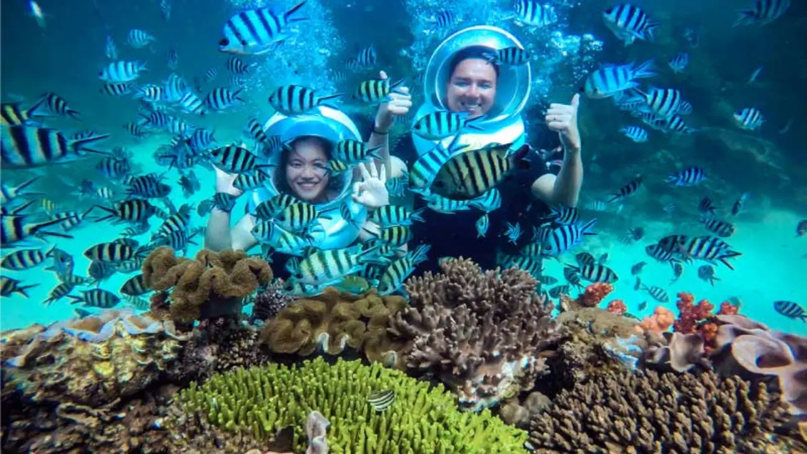

Andaman Tourism Guide 2026: Complete Travel Guide to India's Tropical Paradise

The Andaman and Nicobar Islands are among the most breathtaking destinations in India. Located in the Bay of Bengal, this tropical archipelago is famous for its crystal-clear turquoise waters, white sandy beaches, coral reefs, lush rainforests, exotic marine life, and fascinating history.
Whether you are planning a honeymoon, family vacation, adventure trip, or a relaxing beach holiday, the Andaman Islands offer experiences that rival some of the world's best island destinations.
Unlike many mainland tourist destinations, Andaman provides a unique combination of pristine natural beauty and historical significance. The islands are home to stunning beaches like Radhanagar Beach, vibrant coral reefs perfect for scuba diving, colonial-era ruins, and the iconic Cellular Jail.
This comprehensive Andaman Tourism Guide covers everything you need to know, including the best places to visit, ideal itineraries, transportation options, travel costs, food, adventure activities, and practical travel tips.
Quick Andaman Travel Snapshot
- Best Time to Visit: October to May
- Ideal Trip Duration: 5 to 7 Days
- Main Airport: Veer Savarkar International Airport
- Top Islands: Havelock, Neil Island, Ross Island
- Best Activity: Scuba Diving
Why Visit Andaman Islands?
Many travelers wonder whether Andaman is worth visiting compared to destinations like Goa, Kerala, Lakshadweep, Maldives, Thailand, or Bali. The answer is a definite yes.
The islands offer world-class beaches, vibrant marine life, historical attractions, and adventure activities that make them one of India's most rewarding travel destinations.
Stunning Beaches
The Andaman Islands boast some of Asia's finest beaches with soft white sand, turquoise waters, and breathtaking sunsets.
Incredible Marine Life
Coral reefs surrounding the islands are home to colorful fish, sea turtles, rays, and countless marine species.
Adventure Activities
- Scuba Diving
- Snorkeling
- Sea Walking
- Parasailing
- Kayaking
- Jet Skiing
- Glass Bottom Boat Rides
Rich Historical Heritage
The Cellular Jail in Port Blair serves as a reminder of India's freedom struggle and remains one of the most important attractions in Andaman.
Safe Family Destination
The islands are generally safe, clean, and suitable for families, honeymooners, solo travelers, and senior citizens.
Geography and History of Andaman Islands
The Andaman and Nicobar Islands are located approximately 1,200 kilometers from mainland India in the Bay of Bengal. This remote tropical archipelago consists of hundreds of islands, many of which remain untouched by modern development.
The Union Territory is broadly divided into several major island groups:
- North Andaman
- Middle Andaman
- South Andaman
- Little Andaman
- Nicobar Islands
Dense tropical rainforests cover much of the islands and support a rich variety of wildlife and indigenous cultures. Several tribal communities have lived here for thousands of years.
Indigenous Tribes of Andaman
- Great Andamanese
- Jarawa
- Onge
- Sentinelese
- Shompen
Many tribal regions remain protected by law and are not accessible to tourists. These restrictions help preserve the unique cultures and lifestyles of indigenous communities.
Historically, the islands gained prominence during British colonial rule when the infamous Cellular Jail was established to imprison Indian freedom fighters. The prison later became known as "Kala Pani," symbolizing exile, hardship, and sacrifice.
Today, the Andaman Islands are celebrated both for their historical significance and their reputation as one of India's most spectacular tourism destinations.
Best Time to Visit Andaman Islands
Choosing the right season can significantly enhance your Andaman experience. Although the islands enjoy a tropical climate throughout the year, certain months are better suited for sightseeing, water sports, and island hopping.
Winter Season (October to March)
This is widely considered the best time to visit Andaman. Pleasant weather and calm sea conditions make it ideal for exploring the islands.
Weather Conditions
- Temperature: 20°C to 30°C
- Pleasant humidity
- Calm sea conditions
- Clear blue skies
Ideal For
- Beach holidays
- Scuba diving
- Snorkeling
- Sightseeing
- Island hopping
Since this is the peak tourist season, booking hotels and ferry tickets in advance is highly recommended.
Summer Season (April to June)
Summer remains suitable for tourism despite slightly warmer temperatures.
Advantages of Summer Travel
- Lower hotel rates
- Fewer tourists
- Excellent underwater visibility
- Good conditions for diving and snorkeling
Monsoon Season (July to September)
The islands receive significant rainfall during the monsoon season. While tourism continues, travelers should expect occasional disruptions.
Challenges During Monsoon
- Rough seas
- Ferry cancellations
- Limited water activities
Advantages During Monsoon
- Lush green landscapes
- Budget-friendly accommodation
- Fewer crowds
While monsoon travel can be rewarding for nature lovers, first-time visitors generally prefer the dry season between October and March.
Port Blair Tourism Guide
Port Blair serves as the capital city and primary entry point to the Andaman Islands. Almost every visitor begins their Andaman journey here.
Cellular Jail
The Cellular Jail is undoubtedly the most significant historical attraction in the islands. Built by the British, this prison housed numerous Indian freedom fighters.
Major Highlights
- Historical museum
- Freedom struggle exhibits
- Light and Sound Show
- Original prison cells
The emotional storytelling during the evening Light and Sound Show makes it one of the most memorable experiences in Andaman.
Corbyn's Cove Beach
Located just a few kilometers from Port Blair city center, Corbyn's Cove Beach is perfect for relaxation and water sports.
- Evening walks
- Photography
- Jet skiing
- Beach relaxation
The coconut-lined shoreline creates a beautiful tropical atmosphere that attracts visitors throughout the year.
Chidiya Tapu
Known as the "Bird Island," Chidiya Tapu is famous for its spectacular sunset views and rich birdlife.
- Sunset views
- Birdwatching
- Mangrove forests
- Nature photography
The sunset here is considered among the most beautiful in the Andaman Islands.
Samudrika Marine Museum
This museum provides valuable insights into Andaman's marine ecosystem, history, geography, and tribal heritage.
- Marine ecosystems
- Coral species
- Island history
- Local tribes
It is highly recommended for families, students, and travelers interested in understanding the natural and cultural heritage of the islands.
Havelock Island (Swaraj Dweep)
Havelock Island, officially known as Swaraj Dweep, is the crown jewel of Andaman tourism. Famous for its pristine beaches, turquoise waters, luxury resorts, and world-class diving sites, the island attracts travelers from across India and around the world.
Whether you are seeking relaxation, adventure, photography opportunities, or a romantic honeymoon destination, Havelock Island offers an unforgettable tropical experience.
Radhanagar Beach
Frequently ranked among Asia's finest beaches, Radhanagar Beach is undoubtedly the most famous attraction on Havelock Island.
Highlights of Radhanagar Beach
- Powdery white sand
- Crystal-clear turquoise waters
- Spectacular sunset views
- Safe swimming conditions
- Beautiful tropical scenery
Many travelers consider Radhanagar Beach the highlight of their entire Andaman trip. The beach remains remarkably clean and well-maintained, making it perfect for families, couples, and honeymooners.
Watching the sunset over the Bay of Bengal from Radhanagar Beach is an experience that visitors remember for years.
Elephant Beach
Elephant Beach is one of the most popular destinations for water sports and marine adventures in Andaman.
Popular Activities at Elephant Beach
- Snorkeling
- Sea Walking
- Jet Skiing
- Banana Boat Rides
- Glass-Bottom Boat Rides
- Speed Boat Rides
The shallow coral reefs near the shoreline provide excellent visibility and make Elephant Beach one of India's best snorkeling destinations.
Even travelers who do not know swimming can enjoy the underwater beauty through sea walking and glass-bottom boat experiences.
Kalapathar Beach
Kalapathar Beach offers a quieter and more peaceful atmosphere compared to the more famous beaches of Havelock.
Why Visit Kalapathar Beach?
- Beautiful sunrise views
- Photography opportunities
- Quiet relaxation
- Scenic coastal drives
- Less crowded atmosphere
The contrast between dark volcanic rocks and bright turquoise waters creates one of the most picturesque landscapes in the Andaman Islands.
Scuba Diving in Havelock
Havelock Island is widely regarded as the scuba diving capital of India. The island offers excellent underwater visibility, healthy coral reefs, and abundant marine life throughout the year.
Popular Dive Sites
- Nemo Reef
- Aquarium
- Lighthouse
- Seduction Point
- Johnny's Gorge
Beginners can participate in introductory dives with certified instructors, while experienced divers can explore deeper reef systems and advanced dive sites.
For many travelers, scuba diving becomes the single most memorable experience of their Andaman holiday.
Explore Adventure Activities in Andaman →Neil Island (Shaheed Dweep)
Neil Island, officially known as Shaheed Dweep, offers a slower and more relaxed atmosphere compared to Havelock Island. The island is ideal for travelers seeking tranquility, natural beauty, and uncrowded beaches.
With its laid-back lifestyle, crystal-clear waters, and scenic landscapes, Neil Island provides the perfect escape from busy city life.
Bharatpur Beach
Bharatpur Beach is one of the most popular beaches on Neil Island and is famous for its shallow waters and vibrant coral reefs.
Activities at Bharatpur Beach
- Swimming
- Snorkeling
- Glass-Bottom Boat Rides
- Photography
- Family-Friendly Beach Activities
Families with children particularly enjoy Bharatpur Beach due to its calm waters and safe environment.
Laxmanpur Beach
Laxmanpur Beach is famous for its dramatic sunsets, wide shoreline, and peaceful atmosphere.
Highlights of Laxmanpur Beach
- Sunset views
- White sandy beach
- Coastal photography
- Evening walks
- Peaceful environment
The expansive shoreline makes it one of the most scenic locations on Neil Island.
Natural Bridge
The Natural Bridge is one of Neil Island's most photographed attractions and a must-visit destination for nature lovers.
Formed naturally through years of ocean erosion, this impressive rock arch showcases the power of nature and provides excellent photography opportunities.
During low tide, visitors can also explore nearby tide pools containing small marine creatures and fascinating rock formations.
Baratang Island Tourism Guide
Baratang Island is one of the most unique destinations in the Andaman Islands. Located around 100 kilometers from Port Blair, the island is famous for its limestone caves, mangrove creeks, and mud volcanoes.
The journey itself is an adventure, passing through dense tropical forests and protected tribal reserve areas.
Limestone Caves
The limestone caves are Baratang's biggest attraction. Visitors take a boat ride through scenic mangrove forests followed by a short trek to reach these naturally formed cave systems.
Mud Volcano
Baratang is home to one of India's rare mud volcanoes. Though not dramatic like traditional volcanoes, it remains a fascinating geological phenomenon.
Diglipur Tourism Guide
Located in North Andaman, Diglipur is ideal for travelers seeking offbeat destinations away from mainstream tourist crowds.
Ross and Smith Islands
These twin islands are connected by a stunning natural sandbar that appears during low tide. The crystal-clear water surrounding the islands creates one of the most beautiful landscapes in Andaman.
Saddle Peak National Park
Saddle Peak is the highest point in the Andaman Islands. Trekking enthusiasts can enjoy dense forests, unique wildlife, and panoramic views from the summit.
Ross Island (Netaji Subhas Chandra Bose Island)
Once the administrative headquarters of the British in the Andaman Islands, Ross Island offers a fascinating glimpse into colonial history.
- Historic church ruins
- Old British buildings
- Beautiful sea views
- Friendly deer and peacocks
The island is easily accessible by ferry from Port Blair and is often combined with North Bay Island tours.
Adventure Activities in Andaman
Adventure tourism is one of the biggest reasons travelers visit Andaman. The islands offer some of India's finest water-based activities.
Top Adventure Activities
- Scuba Diving
- Snorkeling
- Sea Walking
- Parasailing
- Jet Skiing
- Kayaking Through Mangroves
- Banana Boat Rides
- Glass Bottom Boat Rides
- Game Fishing
Scuba Diving
Andaman is considered India's premier scuba diving destination. Even non-swimmers can participate through introductory dives conducted by certified instructors.
Sea Walking
Sea walking allows visitors to walk on the ocean floor while wearing a special helmet, making it ideal for those who do not wish to scuba dive.
Food Guide: What to Eat in Andaman
Andaman offers a diverse culinary scene influenced by Bengali, South Indian, North Indian, and coastal cuisines.
Popular Dishes
- Fresh Fish Curry
- Prawn Masala
- Lobster
- Crab Curry
- Tandoori Seafood
- Coconut-Based Curries
- South Indian Breakfasts
Seafood lovers will find Andaman to be one of the best culinary destinations in India.
Andaman Trip Cost Guide
The total cost of an Andaman trip depends on travel style, season, accommodation preferences, and activities chosen.
Approximate Cost Per Person
- Budget Trip (5N/6D): ₹20,000 – ₹30,000
- Mid-Range Trip: ₹35,000 – ₹60,000
- Luxury Vacation: ₹70,000+
Flights usually account for the largest portion of the overall trip budget.
Suggested 6 Days Andaman Itinerary
- Day 1: Arrive Port Blair, Cellular Jail, Light & Sound Show
- Day 2: Ross Island and North Bay Island
- Day 3: Transfer to Havelock, Radhanagar Beach
- Day 4: Elephant Beach Activities
- Day 5: Neil Island Sightseeing
- Day 6: Return to Port Blair and Departure
Frequently Asked Questions (FAQs)
What is the best time to visit Andaman Islands?
The best time to visit Andaman is from October to May when the weather remains pleasant, the sea is calm, and water sports activities operate smoothly.
How many days are enough for Andaman?
A 5 to 7 day trip is ideal for exploring Port Blair, Havelock Island, Neil Island, Ross Island, and enjoying major water activities.
Is Andaman expensive to visit?
Andaman can be explored on various budgets. Budget travelers can complete a trip for around ₹20,000–₹30,000 per person, while luxury vacations can exceed ₹70,000 per person.
Is Andaman safe for solo travelers?
Yes. Andaman is considered one of India's safest tourist destinations. Solo travelers, including women travelers, generally find the islands safe and welcoming.
Which is the most beautiful beach in Andaman?
Radhanagar Beach on Havelock Island is widely regarded as the most beautiful beach in Andaman and is frequently ranked among Asia's top beaches.
Can non-swimmers do scuba diving in Andaman?
Yes. Beginners and non-swimmers can participate in Discover Scuba Diving programs under the supervision of certified instructors.
Is mobile network available in Andaman?
Mobile connectivity is available in Port Blair, Havelock Island, and Neil Island. BSNL, Airtel, and Jio provide the best coverage, although internet speeds may be slower than mainland India.
Are there ATMs in Andaman Islands?
ATMs are available in Port Blair, Havelock Island, and Neil Island. However, travelers should carry some cash, especially when visiting remote locations.
Which island is better for scuba diving?
Havelock Island (Swaraj Dweep) offers the best scuba diving experiences in Andaman due to its excellent coral reefs, marine biodiversity, and professional diving centers.
Is alcohol available in Andaman?
Yes. Alcohol is legally available in licensed hotels, resorts, restaurants, bars, and government-authorized liquor shops across the major tourist islands.
Can I visit Andaman during monsoon?
Yes, but travelers should be prepared for heavy rainfall, rough sea conditions, and occasional ferry cancellations. Monsoon is better suited for budget travelers and nature lovers.
Which is better: Andaman or Lakshadweep?
Andaman offers more islands, historical attractions, sightseeing opportunities, and tourism infrastructure, while Lakshadweep is known for its untouched coral islands and exclusive island experiences.
What are the best water sports in Andaman?
The most popular water sports include scuba diving, snorkeling, sea walking, parasailing, kayaking, jet skiing, banana boat rides, and glass-bottom boat rides.
Do Andaman Islands have coral reefs?
Yes. The Andaman Islands are surrounded by vibrant coral reefs that support rich marine biodiversity and attract divers and snorkelers from around the world.
Is Andaman suitable for family vacations?
Absolutely. The islands offer safe beaches, family-friendly resorts, sightseeing attractions, museums, water activities, and comfortable transportation, making them ideal for families with children.
Conclusion
The Andaman and Nicobar Islands are undoubtedly among the most beautiful travel destinations in India. From the historic Cellular Jail in Port Blair to the world-famous Radhanagar Beach in Havelock Island and the peaceful shores of Neil Island, every corner of the archipelago offers a unique experience.
Whether you are a honeymoon couple seeking romantic beaches, a family looking for a relaxing vacation, an adventure enthusiast eager to explore coral reefs through scuba diving, or a nature lover searching for untouched tropical beauty, Andaman has something for everyone.
The combination of crystal-clear waters, vibrant marine life, breathtaking sunsets, rich colonial history, and warm island hospitality makes Andaman a destination that leaves lasting memories. With proper planning and the right itinerary, your Andaman trip can easily become one of the most memorable journeys of your life.
If you are planning your next beach vacation in India, Andaman deserves a top place on your travel bucket list.
Explore Andaman Tour Packages
Looking for a hassle-free Andaman vacation? Explore our carefully curated Andaman tour packages featuring Port Blair, Havelock Island, Neil Island, sightseeing, ferry transfers, hotels, and guided assistance.
Explore Andaman Tour Packages →